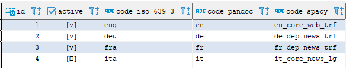
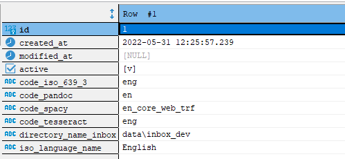

DCR - Running - Document Language


1. Overview
DCR supports the processing of documents in different languages.
The supported languages must be accepted by Pandoc respectively Babel, spaCy and Tesseract OCR.
Furthermore, for each of the languages in question there must be a corresponding entry in the database table language.
2. Database Table language


The active languages in the database table language control the allocation of the documents to a language.
Each document language must have its own entry in this table.
The documents in a particular language are expected in the subdirectory to the inbox or as defined in the directory_name_inbox column.
The entry for the standard language English is created automatically when the database is set up.
In the JSON file db_initial_data_file, the languages German, French and Italian are also predefined but in the inactive state.
The chosen document languages must now either be activated in this file or, if not yet available, added here.
Example entry for the document language French:
{
"row": [
{
"columnName": "active",
"columnValue": false
},
{
"columnName": "code_iso_639_3",
"columnValue": "fra"
},
{
"columnName": "code_pandoc",
"columnValue": "fr"
},
{
"columnName": "code_spacy",
"columnValue": "fr_dep_news_trf"
},
{
"columnName": "code_tesseract",
"columnValue": "fra"
},
{
"columnName": "directory_name_inbox",
"columnValue": null
},
{
"columnName": "iso_language_name",
"columnValue": "French"
}
]
},
| Column | Description |
|---|---|
| active | active language - true or false |
| code_iso_639_3 | three-letter codes, the same as 639-2/T for languages, but with distinct codes for each variety of an ISO 639 macrolanguage |
| code_pandoc | the language code as used in Pandoc respectively Babel - IETF BCP 47} |
| code_spacy | the trained pipeline package as used in spaCy |
| code_tesseract | the language code as used in Tesseract OCR |
| directory_name_inbox | optional the name of the file directory relative to the inbox - if missing the content of the column iso_language_name is used |
| iso_language_name | the name of the language according to ISO 639-1 |
3. Default Document Language
The default document language is English. The corresponding entry in the database table language is created internally with the following contents:
| Column | Content |
|---|---|
| active | true |
| code_iso_639_3 | eng |
| code_pandoc | en |
| code_spacy | en_core_web_trf |
| code_tesseract | eng |
| directory_name_inbox | the inbox directory |
| iso_language_name | English |